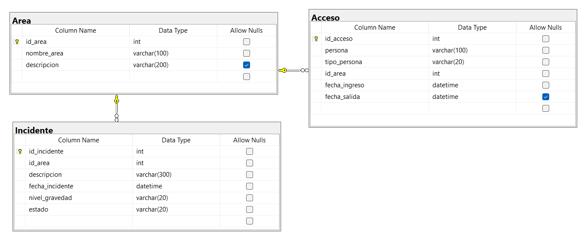

Diagrama de la Base de Datos

Pertinencia de la Arquitectura de la Base de Datos
- La arquitectura relacional permite integrar seguridad con otros módulos (ejemplo: estacionamiento o personal).
- Asegura integridad referencial entre áreas, accesos e incidentes.
- Permite generar reportes históricos y en tiempo real de accesos e incidentes.
- Escalable: se pueden agregar nuevas áreas y tipos de incidentes fácilmente.
Normalización de la Base de Datos
- 1FN: Los datos son atómicos (ejemplo: persona, nivel_gravedad).
- 2FN: Cada tabla tiene clave primaria única (id_area, id_incidente, id_acceso).
- 3FN: No existen dependencias transitivas; cada dato depende únicamente de la clave primaria.
Código SQL
-- Tabla de Áreas del hotel
CREATE TABLE Area (
id_area INT PRIMARY KEY IDENTITY(1,1),
nombre_area VARCHAR(100) NOT NULL,
descripcion VARCHAR(200)
);
-- Tabla de Incidentes
CREATE TABLE Incidente (
id_incidente INT PRIMARY KEY IDENTITY(1,1),
id_area INT NOT NULL,
descripcion VARCHAR(300) NOT NULL,
fecha_incidente DATETIME NOT NULL DEFAULT GETDATE(),
nivel_gravedad VARCHAR(20) NOT NULL CHECK (nivel_gravedad IN ('Leve','Moderado','Grave')),
estado VARCHAR(20) NOT NULL CHECK (estado IN ('Abierto','En Revisión','Cerrado')),
FOREIGN KEY (id_area) REFERENCES Area(id_area)
);
-- Tabla de Accesos (entrada y salida de personal/visitantes)
CREATE TABLE Acceso (
id_acceso INT PRIMARY KEY IDENTITY(1,1),
persona VARCHAR(100) NOT NULL,
tipo_persona VARCHAR(20) NOT NULL CHECK (tipo_persona IN ('Empleado','Visitante','Proveedor')),
id_area INT NOT NULL,
fecha_ingreso DATETIME NOT NULL DEFAULT GETDATE(),
fecha_salida DATETIME NULL,
FOREIGN KEY (id_area) REFERENCES Area(id_area)
);
Insertando registros de ejemplo:
-- Áreas vigiladas
INSERT INTO Area (nombre_area, descripcion) VALUES
('Recepción', 'Entrada principal del hotel'),
('Estacionamiento', 'Área de vehículos de huéspedes y empleados'),
('Restaurante', 'Área de consumo de alimentos'),
('Habitaciones Piso 1', 'Primer nivel de habitaciones');
-- Incidentes registrados
INSERT INTO Incidente (id_area, descripcion, nivel_gravedad, estado) VALUES
(1, 'Cliente perdió una pertenencia en la recepción', 'Leve', 'Cerrado'),
(2, 'Auto estacionado en lugar no autorizado', 'Moderado', 'En Revisión'),
(4, 'Intento de acceso no autorizado a una habitación', 'Grave', 'Abierto');
-- Accesos
INSERT INTO Acceso (persona, tipo_persona, id_area, fecha_ingreso, fecha_salida) VALUES
('María López', 'Empleado', 1, '2025-09-18 08:00:00', '2025-09-18 16:00:00'),
('Carlos García', 'Empleado', 2, '2025-09-18 14:00:00', NULL),
('Proveedor Agua Pura', 'Proveedor', 1, '2025-09-18 10:30:00', '2025-09-18 11:15:00'),
('Jorge Ramírez', 'Empleado', 4, '2025-09-18 18:00:00', NULL);